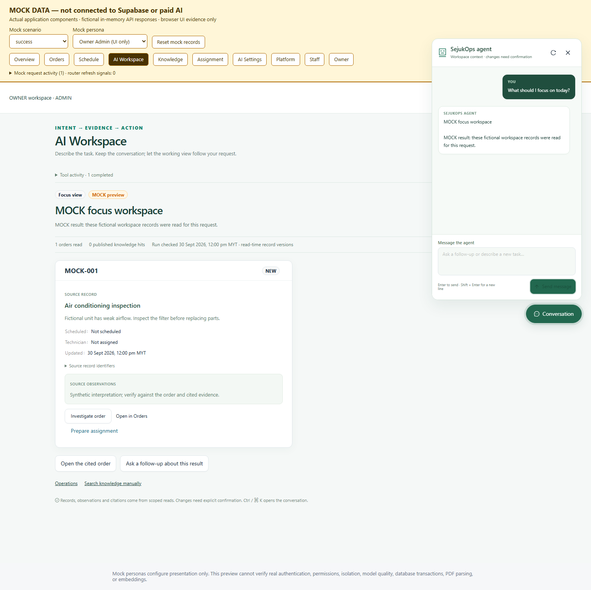

SejukOps · Role dashboards & floating AI
Operations keeps the conventional portal. AI Workspace keeps its adaptive working canvas.
What changed
All three roles: MYT period filters, completed-work trend, service distribution, current queues, comparisons, technician activity and on-demand AI Insight.
Operations: Document import sidebar removed. Ask AI floats at bottom right; Technician receives cited knowledge only.
AI Workspace: Conversation overlays the full-width canvas. Close/reopen retains the conversation; a new conversation cancels/reset context.
Separate AI capabilities
| Surface | Allowed behavior |
|---|
| Operations · Admin / Manager | Read scoped order evidence, query published knowledge, prioritize verified dashboard highlights. Business changes remain manual. |
| Operations · Technician | Published knowledge excerpts and own-job dashboard highlights. No native agent or general order AI access. |
| AI Workspace · Admin / Manager | Bounded dynamic focus / investigation / comparison / knowledge / clarification views. Formal Admin may prepare a persisted proposal and confirm it explicitly; Guest uses manual Demo handoffs. |
Owner read-only perspectives do not run AI. No generated executable UI or new autonomous write tools were added.
Data boundaries
Dashboard counts now read all role-visible orders, with an explicit error above 50,000 rows rather than truncated totals. Completion and rescheduling use actual audit timestamps. Financial amount and average value are unavailable because the current order model does not store charges. Seeded/imported statuses without completion events appear in current status counts, not invented completion history.
Native views expose their existing source data, timestamps, scoped references and optional technical IDs. Customer/location/history/financial fields and human-readable branch/technician names are not supplied by the current native contract; this release does not fabricate them.
Verification details and limitations · Operations Mock checks · AI Workspace Mock checks
AI Workspace · full canvas and fixed Conversation
